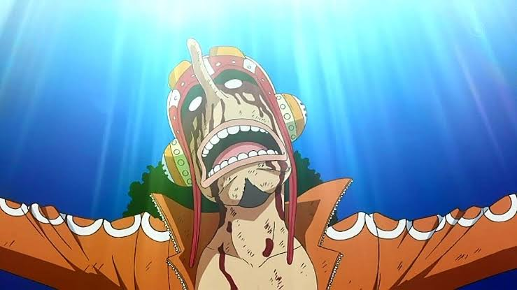
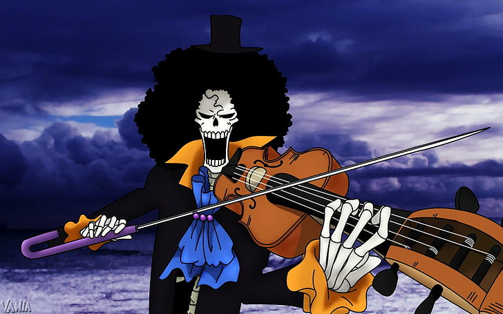

ONE PIECE
MONKEY D. LUFFY
Es el protagonista principal, Luffy es un joven que consume una fruta del diablo llamada la Gomu Gomu no Mi, que le otorga habilidades de goma. Su objetivo es convertirse en el Rey de los Piratas.
RORONOA ZORO
Es el espadachín principal de la tripulación. Zoro utiliza el estilo de espada de tres katanas y es un hábil espadachín. Su sueño es convertirse en el mejor espadachín del mundo.
GOD USSOP
Es el tirador y el "hombre mentiroso" de la tripulación. Usopp es un hábil tirador de francotirador y tiene un talento para la invención. Sueña con convertirse en un valiente guerrero del mar.
NAMI
Es la navegante de la tripulación. Nami es experta en la navegación y la meteorología. Inicialmente, se une a la tripulación con la esperanza de cartografiar todo el mundo.
VINSMOKE SANJI
Es el cocinero de la tripulación. Sanji es un experto en artes marciales que utiliza técnicas basadas en sus piernas. Sueña con encontrar el All Blue, un lugar legendario con pescado de todos los mares.
TONY TONY CHOPPER
Es el médico y el reno de la tripulación. Chopper consume la Fruta Hito Hito no Mi, que le permite cambiar entre las formas humana y de reno. Es el médico de la tripulación y sueña con curar todas las enfermedades.
NICO ROBIN
Es la arqueóloga de la tripulación. Robin tiene conocimientos sobre la historia antigua y busca descubrir la verdad detrás del siglo vacío. Su habilidad única le permite crear extremidades adicionales en cualquier objeto.
FRANKI
Es el carpintero y el hombre de la nave de la tripulación. Franky es un hábil constructor y modificó el barco de la tripulación, el Thousand Sunny. Sueña con construir y navegar en el barco más grande del mundo.
BROOK
Es el músico esqueleto de la tripulación. Brook consume la Fruta Yomi Yomi no Mi, que le permite regresar a la vida después de morir. Es el músico y el espadachín de la tripulación.
JINBE
Es el timonel y el experto en artes marciales de la tripulación. Jinbe es un maestro del Karate Pez y tiene habilidades acuáticas excepcionales. Se une a la tripulación después de los eventos en la isla Whole Cake.